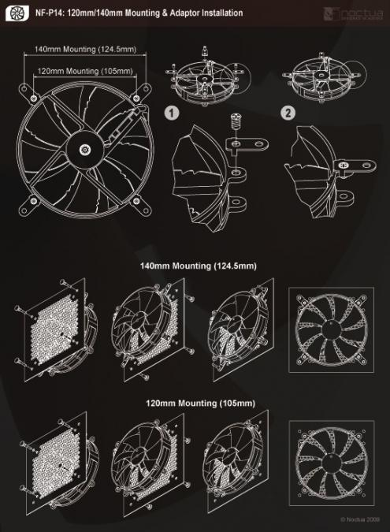
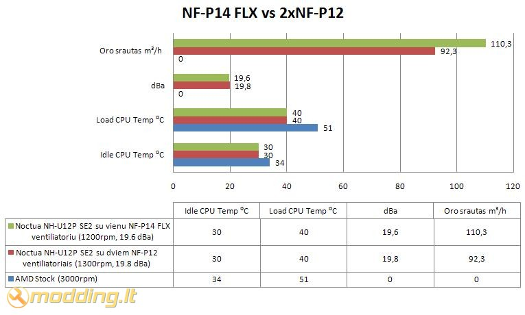
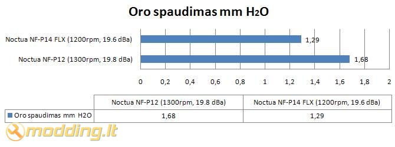

Noctua NF-P14 FLX ventiliatorius
Noctua NF-P14 FLX - vienas naujausių kompanijos Noctua gaminių. Šis ventiliatorius išskirtinis - jis gali būti naudojamas kaip 120mm bei kaip 140mm ventiliatorius: ventiliatoriaus konstrukcija leidžia jį montuoti kaip 120mm ventiliatorių, o panaudojus specialius, koplekte esančius, tvirtinimus, montuoti jį kaip 140mm ventiliatorių. NF-P14 FLX matmenys 140x140x25mm, todėl sumontavus jį vietoje 120mm ventiliatoriaus gausime žymiai geresnius aušinimo parametrus, nes didesnės mentės sukurs didesnį oro srautą.
Žvilgsnis iš arčiau
Noctua NF-P14 FLX ventiliatorius supakuotas pakuotėje su nedideliu permatomu langu, pro kurį matome ventiliatorių. Priekinėje pakuotės dalyje matome kompanijos Noctua logotipą, aušintuvo modėlį bei pagrindinius išskirtinumus: Vortex-Control Notches, Metal Reinforcements, Round Frame, FLX 3 Speed Settings, SC-Drive 2, SSO-Bearing. Šias technologijas aptarsime kiek vėliau.
Galinėje dalyje nurodyta instrukcija septyniomis užsienio kalbomis, trumpai aprašytos ventiliatoriaus veikime naudojamos technologijos, specifikacijos bei nurodytas pakuotės turinys. Galinėje pakuotės sienelėje yra atverčiamas lapas, kuriame pavaizduotas Nine Blade Design su Vortex-Control Notches principas, pavaizduotas SSO-Bearing ir Metal Reinforcements technologijos panaudojimo principas, o taip pat ventiliatoriaus montavimo pavyzdys.
Pakuotės viduje randame:
- Noctua NF-P14 FLX ventiliatorių
- 4 vnt. 140mm ventiliatoriaus tvirtinimo adapterius
- 4 vnt. tvirtinimo varžtus
- 4 vnt. tvirtinimo guminius "varžtus"
- 3:4 pin jungimo į PSU adapterį
- du jungimo adapterius: Low Noise Adaptor (L.N.A) bei Ultra Low Noise Adaptor (U.L.N.A)
Ventiliatoriaus specifikacijos
- Modelis: NF-P14 FLX
- Dydis: 140x140x25mm
- Guolis: SSO-Bearing
- Menčių technologija: NF-P14 Blade Design with VCN
- Ventiliatoriaus apsisukimai: 1200rpm (+/- 10%)
- Oro srautas: 110,3 m³/h
- Triukšmo lygis: 19,6 dBA
- Oro spaudimas: 1,29mm H2O
- Ventiliatoriaus apsisukimai naudojant U.L.N.A: 750rpm (+/- 10%)
- Oro srautas: 71,2 m³/h
- Triukšmo lygis: 10,1 dBA
- Oro spaudimas: 0,53 mm H2O
- Ventiliatoriaus apsisukimai naudojant L.N.A: 900rpm (+/- 10%)
- Oro srautas: 83,7 m³/h
- Triukšmo lygis: 13,2 dBA
- Oro spaudimas: 0,77 mm H2O
- Įtampa: 12 V
- Galia: 1.2 W
- Stipris: 0,1 A
- Ilgaamžiškumas: >150,000 val
- Jungtis: 3:4 pin
- Garantija: 6 metai
Noctua NF-P14 FLX dizainas kiek skiriasi nuo kitų Noctua gaminamų ventiliatorių: 140mm ventiliatorius neturi kvadratinio rėmo, ventiliatorius apvalus su mažomis tvirtinimo auselėmis. Šios auselės tinka montavimui į 120mm vietą. Sumontavus tokį ventiliatorių ant CPU aušintuvo galime gauti žymiai geresnes aušinimo savybes, kadangi bus sukuriamas didesnis oro srautas.
Ventiliatoriaus apvalus rėmas pagamintas iš šviesaus plastiko, propeleris - iš tamsaus plastiko. Propeleris turi 9 mentes, kurios turi specifines išpjovas - tai Vortex-Control Notches. Ši technologija leidžia sumažinti ventiliatoriaus skleidžiamą triukšmo lygį.Tai naujas kompanijos Noctua ventiliatorių konstrukcijos patobulinimas. 140mm ventiliatoriaus mentės gan didelės, todėl svarbu, kad būtų išvengta disbalanso dėl didesnės rotacijos masės. Siekiant užtikrinti ilgalaikį stabilumą, NF-P14 FLX konstrukcijoje panaudotos didelio tikslumo CNC žalvario dalys.

FLX 3 Speed Settings
Komplekte su NF-S12B FLX pridedami U.L.N.A bei L.N.A adapteriai. Ventiliatorius gali būti naudojamas trimis greičių rėžimais: 750rpm, 900rpm, 1200 rpm.
Ši technologija užtikrina lygesnį variklio darbą, taip sumažindama papildomus triukšmus bei vibracijas.
Tvirtinimas
Kaip jau minėjau - tvirtinimo auselės tinka montavimui į 120mm vietą. Montuojant ventiliatorių į 140mm ventiliatoriaus vietą - naudojami rinkinyje esantys adapteriai. Jie uždedami ant kiekvienos auselės ir prisukami varžtais.
NF-P14 FLX ventiliatorius prie korpuso, į 120mm ventiliatoriaus vietą, gali būti tvirtinamas metaliniais varžtais arba guminiais elementais. Jie sumažina ventiliatoriaus į korpusą perduodamas vibracijas ir triukšmus. Montuojant jį į 140mm poziciją, tvirtinimo varžtai panaudojami adapteriams prisukti, o ventiliatorius pritvirtinamas guminių elementų pagalba.

Rezultatai
Pateikiu veikiančio NF-P14 FLX ventiliatoriaus foto U.L.N.A rėžime bei veikiančio 1200rpm. Ventiliatorius veikia išties labai tyliai. Naudojant U.L.N.A gamintojo nurodomas triukšmo lygis 10,1 dBA - puikus rodiklis. Ventiliatoriui veikiant 1200rpm rėžime triukšmo lygis padidėja iki 19,6 dBA, esant 110,3 m³/h oro srautui bei 1,29mm H2O oro spaudimui. Net ir nenaudojant apsukas mažinančių adapterių, ventiliatorius veikia tyliai.
Testavimo sistema:
- CPU Cooler - Noctua NH-U12P SE2 aušintuvas naudojant du NF-P12 arba vieną NF-P14 FLX
- Case - Antec Mini P180
- Mainboard - Asus M2N68-AMSE2
- CPU - AMD ATHLON 64 X2 Dual-Core 5000+ AM2 (65W)
- RAM - Corsair DDR2 KIT 2X1G 800MHZ TWIN2X2048-6400 G
- HDD - SEA BARRACUDA 160GB 7200rpm
- PSU - Cooler Master Silent Pro M700
- Case Fans - Noctua NF-S12B FLX 120mm (1200rpm, 100.6 m³/h, 1.31 mm H2O), Antec 200mm TriCool (400rpm, 39 CFM)
Procesoriaus (CPU) temperatūra testuojama Idle ir Load rėžimais. Load rėžimui naudojama Orthos programa. Temperatūros rodmenys stebėti SpeedFan 4.39 bei PC Probe II V1.04.74 programomis. Testavimams naudotas Antec Mini P180 korpusas galinėje sienelėje turi Noctua NF-S12B FLX 120mm orą ištraukiantį aušintuvą (1200rpm, 100.6 m³/h, 1.31 mm H2O), o taip pat viršuje esantį, orą ištraukiantį, Antec 200mm TriCool ventiliatorių (400rpm, 39 CFM).
Testuose palygintos CPU temperatūros aušinant jį Noctua NH-U12P SE2 aušintuvu naudojant du NF-P12 arba vieną NF-P14 FLX ventiliatorių.


Rezultatai geri - vienas NF-P14 FLX ventiliatorius aušinimo rezultatais nenusileidžia dviems NF-P12 ventiliatoriams, sumontuotais ant Noctua NH-U12P SE2 aušintuvo radiatoriaus. NF-P14 FLX turi mažesnį oro spaudimą nei NF-P12, tačiau jo oro srautas yra didesnis, ir tai leidžia jam pasiekti tokius gerus rezultatus. Kadangi NF-P14 FLX yra 140mm - apipučiami radiatoriaus šonai, taip padidėja vėdinamas plotas bei pagerėja aušinimas. Svarbu paminėti, kad vienas NF-P14 FLX ventiliatorius veikia tyliau nei du mažesni NF-P12 ventiliatoriai.
Išvados
Pliusai:
- galimybė naudoti kaip 120mm ventiliatorių
- efektyvus aušinimas
- kokybiškas
- yra apsukas mažinantys adapteriai U.L.N.A ir L.N.A
- tylus - tik 10.1 dBA naudojant U.L.N.A !
- 6 metų garantija
Minusai:
- nėra apsukų reguliatoriaus
- kaina
 Noctua NF-P14 FLX nėra paprastas 140mm ventiliatorius - tai ventiliatorius, kuris gali būti sumontuotas tiek kaip 120mm, tiek kaip 140mm ventiliatorius. Ši savybė leidžia jį montuoti ant CPU aušintuvų kaip 120mm ventiliatorių ir taip gauti didesnį oro srautą bei mažesnį triukšmo lygį. Testų rezultatai rodo, kad vienas NF-P14 FLX ventiliatorius efektyvumu nenusileidžia dviems NF-P12 ventiliatoriams, sumontuotiems ant NH-U12P SE2 aušintuvo radiatoriaus. NF-P14 FLX komplekte esantys apsukas mažinantys adapteriai leidžia sumažinti jo apsukas bei triukšmo lygį, todėl ventiliatorius veikia labai tyliai. Vortex-Control Notches, SC-Drive 2 bei SSO-Bearing suteikia ventiliatoriui geras charakteristikas bei ilgaamžiškumą. Šio ventiliatoriaus kaina didelė ir yra ~75 Lt, tačiau jo pliusai bei 6 metų garantija atperka kainą.
Noctua NF-P14 FLX nėra paprastas 140mm ventiliatorius - tai ventiliatorius, kuris gali būti sumontuotas tiek kaip 120mm, tiek kaip 140mm ventiliatorius. Ši savybė leidžia jį montuoti ant CPU aušintuvų kaip 120mm ventiliatorių ir taip gauti didesnį oro srautą bei mažesnį triukšmo lygį. Testų rezultatai rodo, kad vienas NF-P14 FLX ventiliatorius efektyvumu nenusileidžia dviems NF-P12 ventiliatoriams, sumontuotiems ant NH-U12P SE2 aušintuvo radiatoriaus. NF-P14 FLX komplekte esantys apsukas mažinantys adapteriai leidžia sumažinti jo apsukas bei triukšmo lygį, todėl ventiliatorius veikia labai tyliai. Vortex-Control Notches, SC-Drive 2 bei SSO-Bearing suteikia ventiliatoriui geras charakteristikas bei ilgaamžiškumą. Šio ventiliatoriaus kaina didelė ir yra ~75 Lt, tačiau jo pliusai bei 6 metų garantija atperka kainą.
Modding.lt komanda dėkoja Jakob Dellinger iš www.noctua.at už apžvalgai suteiktą produktą.
Jei norėsite pakomentuoti mano straipsnį arba pareikšti savo nuomonę, apsilankykite Modding.lt forume.


{kind=link}
{kind=link}
{kind=link}
{kind=link}
{kind=link}
{kind=link}
{kind=link}
{kind=link}
{kind=link}
{kind=link}
{kind=link}
{kind=link}
{kind=link}
{kind=link}
{kind=link}